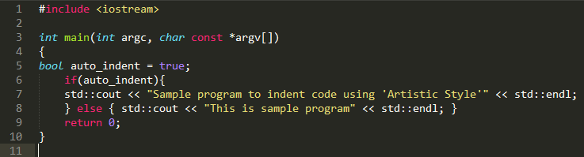
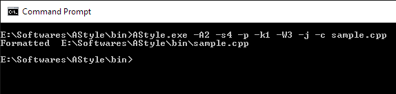
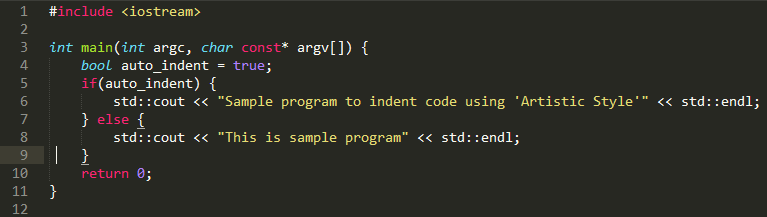
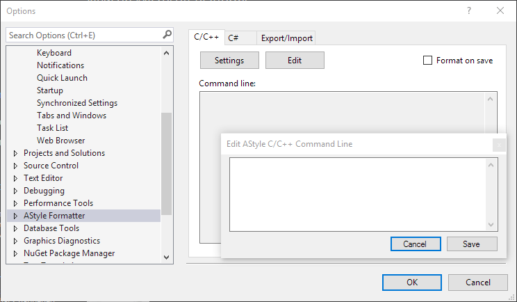

Handling Coding Style - Developer Friendly and Efficient Way
Coding Style is important and challenging for project having multiple developers. Some points from coding style like Indentation is intrinsic part of beautiful code in computer programming. It makes source code easy to read and understand. It clearly conveys program structure and helps future readers in updating/maintaining code. Most of the developers (who care for their code) will agree in above benefits, but it becomes topic of timeless debate when agreeing on single common coding style. Everyone has their own opinion about good coding style and its elements. Most common debate is about "TABS vs SPACES".
There are many articles/debates present over the web about this topic, and I don't want to add one in it. Not me or someone else can stop this debate. It's about people and their individual choices, which can't be controlled by some universal program (as of this writing). But there is something which we can certainly improve, which is used by developer to build things - it's tool/editor.
Tools are important part of development. Developers have been writing programs for several decades now using their favorite tool. Tool could be basic text editor like Notepad, sophisticated text editors like Emacs, Vim, Sublime Text, Notepad++, etc. or it could be full featured IDE (Integrated Development Environment) like NetBeans, Visual Studio. Each tool (except Notepad) have some settings to control code style. What is missing from current tools? How tools should help developer to focus on its program with choice of his/her coding style? How tools should handle code formatting on project involving multiple developers? Isn't Project's Coding Standards Document sufficient?
Let's look at the ways in which we can manage coding style or specifically indentation style for multi-developer project.
1. Create guidelines and order everyone to follow it. Which is simple, but as discussed above not always practically possible. Also its not guaranteed that everyone will follow it.
2. For forcing everyone to follow guidelines, alter commit process of version control to check violations of a defined set of coding standards and fail the commit in case of violations. For example: 'PHP_CodeSniffer' can be integrated to Git version control as pre-commit hook so that it will not commit the code unless the code is clean as per defined standard. http://tech.zumba.com/2014/04/14/control-code-quality
This way we can enforce common standard but it's not developer friendly way and does not help in solving above debate.
3. To make commit process developer friendly we can add functionality to automatically format code according to standard using code indenter/beautifier. For example: 'Artistic Style'.
Now common standard is guaranteed in project code, but problem is still partially solved. All new checkouts will not contain developer's code styles in which he/she love to code.
In addition there lack of capability in current editors/IDE to efficiently customize and share developers coding style. You have to go through multiple tabs/windows/options to customize your coding style. Each editor/IDE have different ways for same task. There is no common and portable way to get your coding style on every editor.
To solve problem completely we need to consider following things that should be present in editors/IDEs:
1. Customizing coding style easily with only single setting.
2. Developers should have freedom to work in its coding style, without violating project coding style.
Let's look at how we can implement above features.
How can we customize coding style with only one setting? To answer this question, I would like to briefly describe code formatter utility 'Artistic Style'. It automatically re-indents and re-formats source files for various programming languages. It takes input as source code file and specifications of required formatting style as various command line arguments to alter/produce file with required formatting style.

Sample code before applying Artistic style utility.

Applying Artistic style utility.
Following options are used. Option details can be found on: http://astyle.sourceforge.net/astyle.html
Tab Options: -s4 (--indent=spaces)
Padding Options: -p (--pad-oper)
Padding Options: -k1 (--align-pointer=type)
Padding Options: -W3 (--align-reference=name)
Formatting Options: -j (--add-brackets)
Formatting Options: -c (--convert-tabs)

Result of applying Artistic style utility on sample code.
All options that developer wants in his coding style can be teated as a single string, Which can be processed to format source code. From above example "-A2 -s4 -p -k1 -W3 -j -c" can be considered as coding standard. There are well known styles like allman, bsd, kr, gnu, etc. are available which can be easily applied using single option. For example: astyle --style=kr sample.cpp
To be able to change coding style using only one setting, we should provide one setting in tool where developer can set its coding style string. Developer will create its coding style once as set of option string, which he/she can use with different editors. It is also easy to share your coding style just as single string of options. In Visual Studio we can enable such feature using an Astyle Extention:
https://visualstudiogallery.msdn.microsoft.com/2f3f04cd-2866-4e47-a671-d1cc9cc3fb02

Astyle Extention in Visual Studio 2015
If every or at lease popular editors/IDE have this common feature we can achieve goal of 'customizing coding style with only single setting'.
For freedom of coding styl without violating project coding standard we need some additional but similar functionality. We need two instead of one coding style setting. In one setting we can set the project related coding style which can be used while code commit, other one can be used to format code as per developer preferences while he/she is working on code.
Having above features in tools, will make it possible to work with your own coding style without worrying about project coding style.